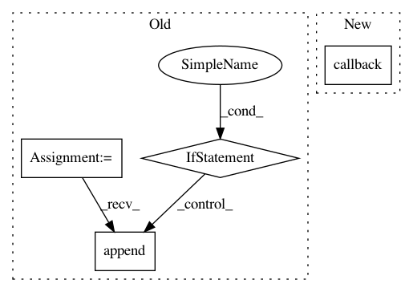

602be075297ae9b6b1ee172da4f52e64739cbd17,lib/matplotlib/tight_bbox.py,,adjust_bbox,#Any#Any#Any#,8
Before Change
_boxout = fig.transFigure._boxout
fig.set_tight_layout(False)
old_aspect = []
locator_list = []
sentinel = object()
for ax in fig.axes:
pos = ax.get_position(original=False).frozen()
locator_list.append(ax.get_axes_locator())
def _l(a, r, pos=pos):
return pos
ax.set_axes_locator(_l)
// override the method that enforces the aspect ratio
// on the Axes
if "apply_aspect" in ax.__dict__:
old_aspect.append(ax.apply_aspect)
else:
old_aspect.append(sentinel)
ax.apply_aspect = no_op_apply_aspect
def restore_bbox():
for ax, loc, aspect in zip(fig.axes, locator_list, old_aspect):
After Change
stack = contextlib.ExitStack()
stack.callback(fig.set_tight_layout, fig.get_tight_layout())
fig.set_tight_layout(False)
for ax in fig.axes:
pos = ax.get_position(original=False).frozen()
In pattern: SUPERPATTERN
Frequency: 3
Non-data size: 4
Instances
Project Name: matplotlib/matplotlib
Commit Name: 602be075297ae9b6b1ee172da4f52e64739cbd17
Time: 2020-06-09
Author: quantum.analyst@gmail.com
File Name: lib/matplotlib/tight_bbox.py
Class Name:
Method Name: adjust_bbox
Project Name: glm-tools/pyglmnet
Commit Name: fca0d19f28eb612862376edc73e0d1ed4c397e9f
Time: 2018-09-07
Author: mainakjas@gmail.com
File Name: pyglmnet/pyglmnet.py
Class Name: GLM
Method Name: fit
Project Name: glm-tools/pyglmnet
Commit Name: b6af7a54569d20d53080bc09687732c8325b00a8
Time: 2018-09-08
Author: mainakjas@gmail.com
File Name: pyglmnet/pyglmnet.py
Class Name: GLM
Method Name: fit